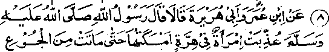
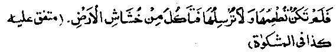
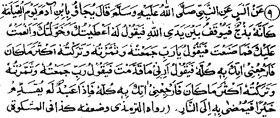
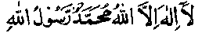
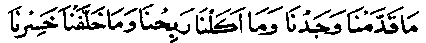
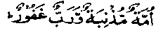

Chapter Two · Section (b): Ahadith regarding the evils of miserliness
2. Retribution for starving a cat to death


8. Ibne Umar and Abu Hurairah Radhiallaho anhoma both have quoted Rasulullah Sallallaho alaihe wasallam to have said that a woman was condemned to Hell because she kept a cat tied up until it died of hunger, she did not give it any food,nor set it free to find food for itself. (Mishkaat)
Note: People who keep pets bear great responsibility towards them, as these dumb creatures cannot express their needs. Therefore, providing feed and drink to these pets is an important obligation of the owners. To be miserly in discharging that obligation is to invite severe punishment upon oneself Many people are fond of keeping animals but they are reluctant to spend adequately on their feed and fodder. Various Ahadith under different headings have quoted Rasulullah Sallallaho alaihe wasallam to indicate a warning from Allah Ta'ala about these animals. Once, when Rasulullah Sallallaho alaihe wasallam was out for a walk, he saw a camel,on the way, whose stomach had shurnk (due to hunger or weakness) and he said, "Allah Ta'ala has warned you about these dumb creatures; maintain them well for riding as well as for eating'.' Rasulullah Sallallaho alaihe wasallam used to go out for a call of nature into a garden or behind a mound.Once he went toagarden for that purpose, where he saw a camel who started moaning when he saw him and tears began to flow from his eyes (a natural thing to happen when meeting a sympathiser). Rasulullah Sallallaho alaihe wasallam went to the camel and rubbed his hand affectionately behind the ear, whereupon the camel became quiet. Rasulullah asked about the camel’s owner; one of the Ansaar came forward to claim him. Rasulullah Sallallaho alaihe wasallam told him, "Are you not afriad of Allah Ta'ala who has made you his master? The camel is complaining that you keep him hungry and make him work hard."
Once, when Rasulullah Sallallaho alaihe wasallam saw a donkey whose face was branded, he said, "Don’t the people know that I have cursed the person who brands an animal’s face or hits it?” This Hadith has been mentioned in Abu Dawood, and several other narrations contain the same warning that animals should not be cruelly treated. Obviously, when there is so much said about the care of animals, behaviour towards man, the superior-being, is even more important and quite a serious matter to consider. Rasulullah Sallallaho alaihe wasallam has said that, when someone is responsible for feeding a man or an animal, any negligence towards them amounts to cruelty to oneself. Therefore, if we are stingy in feeding an animal which is being kept for some use, because no one is watching us, this would amount to a severe cruelty to oneself; Allah knows everything about it and His Recorders are recording all things, however secret. This misfortune is due to miserliness. Animals are kept for serving a man, for riding them, tilling the land or carrying loads but, due ,to miserliness, he finds it hard to spend any money on them.

9. Rasulullah Sallallaho alaihe wasallam has been quoted to have said that on the Day of Judgement a man (weak and lean) like a lamb will be brought before Allah Ta'ala Who will question him," What did you do with the wealth, the train of servants and many bounties that I bestowed upon you? Give me their account." The man will reply, "My Lord, I collected a lot of wealth and increased it considerably (by my own efforts), far more than what I had in the begin-ing. Please send me back to that life and all shall be brought here". He will be commanded to show what he had sent here (to be treasured for This Day). The man will repeat the same request of sending him back (so that he could spend all that in the path of Allah) and show it here. Since he will have nothing to show from what he could have spent previously as Sadaqah, he will be thrown into Jahannam.
Note: We work hard in this life in business and other professions, to earn money in order to collect sufficient resources for future use and for any need that may arise. We are, however, paying little heed to the real need which is sure to arise in Akhirah and will mean a pressing requirement. To meet this situation, we are well aware that only that particular credit will be available which is deposited in the Divine Treasury while in this world. It will not only be a safe deposit but will increase continuously, by the grace of Allah Ta'ala. We are well aware that life here, however long, is bound to end one day, while the life of Akhirah will never end. In our worldly life, if one is left without resources, he can live by working even as a labourer or, the worst of all, one may resort to begging. But, there will be no source of earning anything in the next life, while only that much will be useful which was sent in advance during the life here as a deposit. In one of the Ahadith, Rasulullah Sallallaho alaihe wasallam is reported to have said that when he visited the Jannah he saw on both sides three lines written in golden letters. The first line was the Kalimah Tayyabah:

The second was:

What we had sent ahead we have received, that which we ate up in that life was a gain and that which we left behind was a total loss.
The third line contained:

The sinful Ummah and the Forgiving Lord1
Ayat No. 6 in Chapter one states that on the Day of Judgement there would be no business deals, no friendship and' no recommendations. Ayat No. 30 in the same Chapter states that every person should make sure that he has sent something in advance for requirements on that Day. One Hadith says that when one dies, the angels ask him what he has sent ahead as a deposit in his account to be useful for that Day, while the people of the world ask as to what he has left behind. In another Hadith when Rasulullah Sallallaho alaihe wasallam asked, "Who is it among you who loves the property of his heirs more than his own properly"? The Sahabah replied that there was none among them who did not love his own properly more than that of his heirs. Rasulullah Sallallaho alaihe wasallam then said that a person’s own properly is only that much which he sends in advance; whatever he leaves behind is no longer his property, but that of his heirs.
Another Hadith says that the man keeps saying, "My property, My Property". Only three things are his property: one which he has used as food, the second which he wore till it was worn out and the third which he sent in advance to be deposited in his account for the Akhirah. Anything else is not his property; it is left behind for other people. It is interesting that man keeps collecting, toiling and bearing hardships for the people to whom he does not like to give a penny in his lifetime , but irony of fate makes them the successors to all that he hid collected. Artaah Ibne Sahitah Rahmatullah alaihe, at the time of his death, recited a few couplets which are translated as follows: "A man says I have collected a lot of wealth, but generally he earns and hoards for others, his heirs. He keeps an account of what and where he has spent his money. But later he leaves every thing as a booty for such people who are not accountable to him for squandering what he left behind. Therefore, eat and feed others while you are living, at the cost of the miserly heirs. After death, a man cannot hope to get any benefit from his wealth and none among his successors even think of him while enjoying his property.